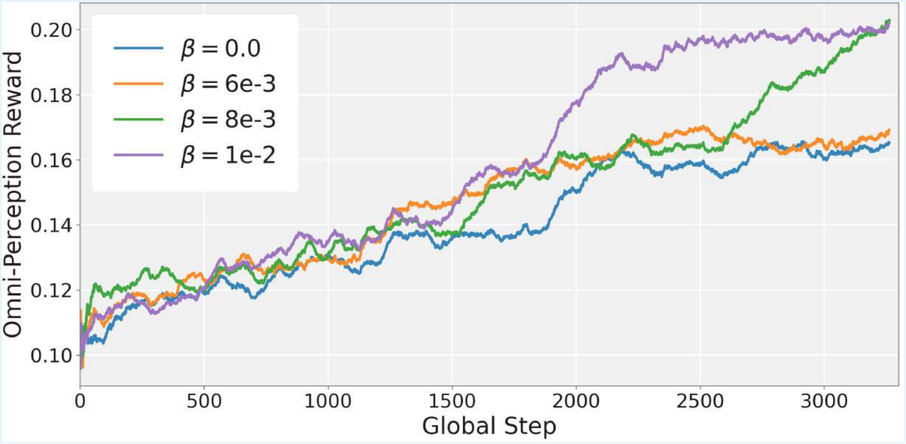
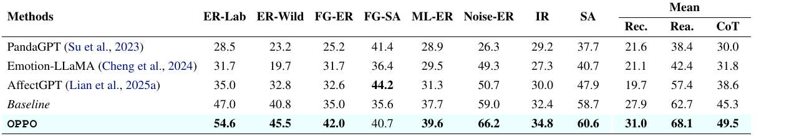
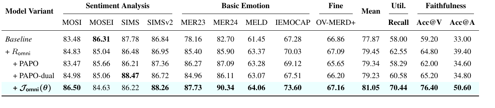

Omni-Perception Policy Optimization for Multimodal Emotion Reasoning

Abstract
Current emotion-oriented Omni-MLLMs still lack reliable omni-modal perception. They often underutilize multimodal cues in their reasoning trajectories, and they can produce unfaithful behavior by hallucinating modality-specific statements from other modalities.
We propose OPPO (Omni-Perception Policy Optimization), a reinforcement learning framework that explicitly optimizes multimodal perception. OPPO introduces an Omni-Perception Reward to encourage coverage of fine-grained visual, acoustic, and emotion cues, and an Omni-Perception Loss to suppress cross-modal hallucination through unimodal masking and token-level faithfulness regularization.
We further introduce MEP-Bench, a diagnostic benchmark that quantifies both utilization and faithfulness. Experiments show that OPPO achieves state-of-the-art performance on MER-UniBench and MME-Emotion, while substantially improving perception-oriented diagnostics.
Highlights
- Finding: Existing emotion Omni-MLLMs often miss human-perceived multimodal evidence and hallucinate masked-modality evidence under spurious audio-video correlations.
- Benchmark: MEP-Bench diagnoses reliable perception using evidence recall for utilization and masked-modality perception accuracy for faithfulness.
- Method: OPPO combines cue-coverage reward with targeted modality-sensitive loss, aligning generated reasoning with visual, acoustic, and emotion evidence.
- Performance: OPPO reaches 81.05 mean score on MER-UniBench and improves MEP-Bench recall from 58.00 to 70.44 over the strong baseline.
MEP-Bench Diagnostic Benchmark
MEP-Bench is designed to evaluate whether an emotion Omni-MLLM can perceive multimodal evidence reliably, rather than merely generating a plausible explanation. It is derived from OV-MERD and focuses on cue-rich instances where visual and acoustic evidence can be explicitly checked.
💡 Benchmark scale: MEP-Bench contains 300 cue-rich samples and 500 probe questions per modality for masked visual and masked audio evaluation.
Framework Architecture

Overview of OPPO: (Top) Fine-grained evidence is organized into video cues, audio cues, and emotion cues. (Middle) The Omni-Perception Reward builds an Evidence-Routing Matrix between generated clauses and ground-truth cues, encouraging the model to cover diverse multimodal evidence. (Bottom) The Omni-Perception Loss constructs unimodal masked inputs and applies KL supervision to modality-specific evidence tokens, enforcing faithfulness.
Training Pipeline
-
Structured output: the model generates a reasoning chain inside
<think>...</think>, followed by a final prediction inside<answer>...</answer>. - Cold-start SFT: OPPO uses 5k samples from MER-Caption+ for supervised fine-tuning.
- RL stage: GRPO-style optimization combines task reward, format reward, Omni-Perception Reward, and Omni-Perception Loss.
- Default setting: alpha = 0.5, beta = 8e-3, mask ratio rho = 0.7, and similarity threshold delta = 0.5.
Method Details
Omni-Perception Reward
OPPO decomposes ground-truth reasoning into atomic evidence cues and groups them into visual cues, acoustic cues, and emotion cues. The generated reasoning chain is segmented into clauses. Each cue is matched to its best supporting clause by embedding similarity. The reward increases when generated clauses cover more ground-truth evidence across all cue types.
- Video cues: facial expression, gaze, smile, posture, and body movement.
- Audio cues: tone, rhythm, volume, pause, tremble, and pace.
- Emotion cues: inferential statements that connect observed evidence to the final emotion.
Omni-Perception Loss
To test whether a visual or acoustic statement really depends on its source modality, OPPO compares the model distribution under the full input and under a counterfactual input where one modality is masked. Unlike generic perception losses such as PAPO, OPPO applies the KL term only to evidence tokens that describe the masked modality. This makes the constraint targeted and reduces global distribution drift.
💡 Why reward and loss work together: the reward asks the model to recover useful cues, while the loss ensures that modality-specific cue tokens truly depend on their corresponding modality.
Understanding the Optimization Synergy
The appendix provides an information-theoretic interpretation of why the reward and loss are coupled. The Omni-Perception Loss expands the faithful information channel between modality input and evidence tokens. The Omni-Perception Reward then uses this channel to recover task-relevant evidence cues.
- Loss as dense supervision: modality-specific KL supervision pushes the model toward modality-sensitive reasoning regions before sparse reward optimization becomes effective.
- Reward as semantic steering: cue coverage turns the expanded information channel into discriminative evidence for emotion understanding.
- Empirical validation: as beta increases to 8e-3, faithfulness improves and the final Omni-Perception Reward rises substantially.

Synergistic effect of Omni-Perception Loss on Reward: a sufficient beta value raises the converged reward, suggesting that faithful perception unlocks stronger cue utilization.
Experimental Results
Diagnostic Results on MEP-Bench

OPPO improves recall by 12.44 over the strong baseline and increases masked perception accuracy by 17.20 on video probes and 17.60 on audio probes.
Main Results on MER-UniBench

Main Results on MME-Emotion

Ablation Studies
Component Analysis

Hyperparameter Findings
- Reward weight alpha: alpha = 0.5 gives the best stable balance; alpha >= 0.6 can cause format collapse late in training.
- Loss weight beta: beta = 8e-3 yields the best overall performance, raising recall to 70.44 and Acc@V to 76.40.
- Mask ratio rho: rho = 0.7 provides the best balance between task performance, utilization, and faithfulness.
- Similarity threshold delta: delta = 0.5 achieves the best trade-off; lower thresholds behave more like modality-agnostic constraints.
Embedding Reward vs. LLM-as-a-Judge
The embedding-based reward is deterministic, continuous, tightly coupled with evidence routing, and more efficient than judge-based scalar rewards.
Qualitative Comparison


Qualitative Results: OPPO captures richer multimodal evidence in its reasoning process and avoids hallucinating modality-specific cues under masking, while baseline methods often overlook key visual or acoustic evidence and produce unfaithful explanations.
Citation
@article{han2026oppo,
title={Omni-Perception Policy Optimization for Multimodal Emotion Reasoning},
author={Han, Zhiyuan and Zhu, Beier and Tong, Wenwen and Shao, Pengyang and Song, Peipei and Wang, Xinyi and Chen, Jiangnan and Lu, Lewei and Yang, Xun},
journal={arXiv preprint arXiv:2606.25325},
year={2026}
}Acknowledgements
We thank the following projects and benchmarks for their excellent contributions: MoSEAR, Emotion-LLaMA, AffectGPT-R1, and HumanOmni-V2.